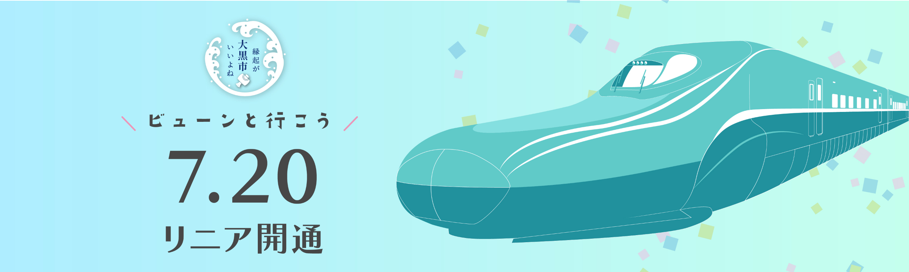
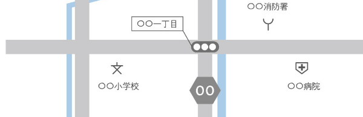
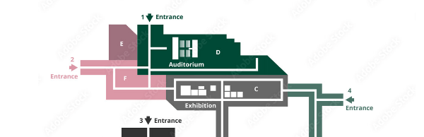

Language ▼
English
中文(繁)
中文(簡)
한국
Português
français
Deutsche
Español
italiano
ไทย
Tiếng Việt
русский
हिन्दी
Bahasa Melayu
عربى
文字の大きさ
標準
拡大
配色
黒
白
黄
大雨特別警報発令中
最新の情報を確認し、
十分に警戒してください。
気象情報
避難状況
防災アプリ ダウンロード

市民の方
事業者の方
観光・移住
市政
あなたの状況・ご用件を選んで探す
特集
仮設住宅の設置状況
説明が入ります説明が入ります説明が入ります説明が入ります説明が入ります説明が入ります説明が入ります
もっと見る
大黒市役所へご用の方へ

アクセス・開庁時間

市役所フロアガイド
組織図・問い合わせ先